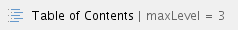

Feedback is a service provided by the Rakuten Ecosystem Mobile that enables developers to get real time input from users on the usability and functionality of their mobile applications.
Here’s how it works:
Feedback opens a new line of direct communication between users and developers. Users go straight to you with pain points or requests, cutting out the middleman of app store reviews.
Feedback shields you from negative reviews and ratings. Since users take problems directly to developers, they are less likely to do so publicly in negative reviews.
More importantly, you can encourage users that give positive feedback to rate the application in app stores.
Feedback enables you to better understand areas in need of improvement in your applications. When you fix an issue or add a feature based on user feedback, you are tailoring your application to user needs.
The Rakuten Ecosystem Mobile SDK gives you the UIs and libraries to receive data from users.
Users are enabled to provide:
Pending user consent, Devices send:
Feedback provides four screens that for app developers to use. Alternatively, developers can ignore these interfaces and create their own.
UI Screenshot | Summary | Description |
|---|---|---|
 | Feedback Selection Screen | Users can choose to Send Feedback, Request a Feature, or Report a Bug. |
 | Feedback Screen | Users can rate their experience on a 5 star scale and provide written feedback on functionality and usability. Users can tap Preview to verify their feedback before sending it in. |
 | Bug Report Screen | Users can send written descriptions of bugs encountered during their experience. |
 | Feature Request Screen | Users can provide a Feature Title to summarize the feature and the Description space to describe it in detail. |
Rakuten Ecosystem Mobile Services provides you with a dashboard to view feedback collected from users. It also gives you the flexibility enable or disable the feature remotely.
The Dashboard summarizes your feedback statistically and graphically, and enables you to view individual pieces of feedback through using a filter.
 > Screen Shot 2015-03-04 at 4.31.52 PM.png")

The Statistics section of the dashboard totals user star ratings and feedback types.

The Filter enables you to sort user feedback by Resolution Status, Feedback Type, and Application.
The Search function enables you to sort the list by keyword. When you enter a search term, the list is automatically updated.

Step 1: Download the Rakuten Mobile SDK
Step 2: Register your app with Mobile Ecosystem Services
Step 3: Build Feedback Into Your App
Step 4: Test your new Feedback feature
Step 5: Release your app to users!
The Rakuten Mobile SDK recommends to use this package: https://rmsdk.apps.global.rakuten.com/docs/android/jp.co.rakuten.sdtd.feedback
Additional documentation can be found here: https://rmsdk.apps.global.rakuten.com/docs/android/jp.co.rakuten.sdtd.feedback
The Rakuten Mobile SDK recommends this package: https://rmsdk.apps.global.rakuten.com/docs/ios/RFeedback
Additional documentation can be found here: https://rmsdk.apps.global.rakuten.com/docs/ios/RFeedback
The Rakuten Ecosystem Mobile team provides an API that sends data to the Ecosystem Mobile Services dashboard.
The Rakuten Ecosystem Mobile Services API sends the information in the table below.
Field | Description | Required (Yes/No) | Data Type | Validation |
|---|---|---|---|---|
| Demographics | Member information including age, gender, location | No | Key Value Pair (Map/Hash) | |
| Custom App Data | Custom JSON code from client apps | No | text / JSON | |
| App ID | Client app ID | Yes | numeric | App ID format |
| Device ID | Client device ID | Yes | alphanumeric | Device ID format |
| Login Status | Whether or not the user is logged in to an account associated with the application | Yes | boolean | |
| Star Rating (UI) | User ratings on a scale of zero to five | Yes | numeric | between 0 & 5 only |
| Free Text (UI) | User input including bug reports, feedback, or feature requests | Yes | text | unlimited length |
| Title (UI) | User title for bug reports, feedback, or feature requests | Yes | text | 255 characters |
| Classification (UI) | Bug Report, Feedback, or Feature Request | Yes | numeric | limited to only 3 types
|
| Crash Logs | User can attach relevant logs to a bug report | Yes | file / blob | |
| Device Model | Report the make and model of the client device | Yes | alphanumeric | |
| OS Version | Report the OS Version of the client device | Yes | alphanumeric | |
| Region Setting | Report the Region Setting (at time of feedback) of the client device | Yes | alphanumeric | |
| SDK Library Ver. | Report the installed versions of any SDK libraries | alphanumeric |
The Rakuten Ecosystem Mobile SDK team provides you with two methods of testing your new feature: a Test Automation file and a QA application.
The Test Automation File includes behavior driven development (BDD) scenarios, which are applicable to the SDK provided default UI and can be used with automation testing tools.
Download the file here: BDD Scenarios for feedback.txt
The QA Application, provided in the SDK download package, is a sample app that implements an end-to-end Feedback module.
If you need access to the QA app on your personal phone, email prj-rmsdk@mail.rakuten.com for a Hockey app invite.
Within the QA Application, you can access a staging environment. Any feedback sent from the staging environment will be sent to the Rakuten Ecosystem Mobile Services dashboard.
You can reference the QA Application code to set up your own staging environment.
Rakuten Ecosystem Mobile SDK Roadmap: Roadmap for Rakuten Ecosystem Mobile SDK
SDK Reference Documentation: https://rmsdk.apps.global.rakuten.com/
For all other inquiries, contact: prj-rmsdk@mail.rakuten.com